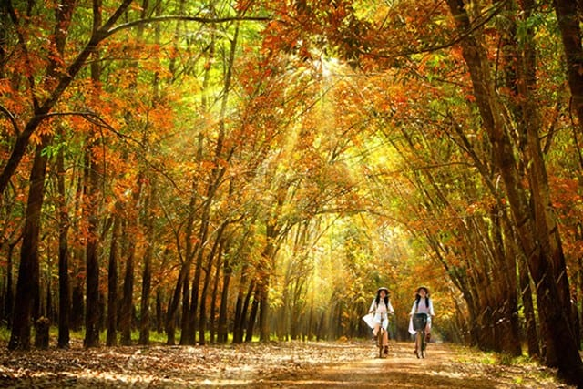

HELLO, IT'S NICE TO MEET YOU

Bình Phước là một tỉnh thuộc vùng Đông Nam Bộ Việt Nam. Tỉnh lỵ của Bình Phước hiện nay là thành phố Đồng Xoài,
cách Thành phố Hồ Chí Minh khoảng 121 km theo đường Quốc lộ 13 và Quốc lộ 14 và 102 km theo đường Tỉnh lộ 741. Bình Phước là tỉnh nằm trong Vùng kinh tế
trọng điểm phía Nam có 240 km đường biên giới với Vương quốc Campuchia trong đó 3 tỉnh biên giới gồm Tbong Khmum,
Kratie, Mundulkiri, tỉnh là cửa ngõ đồng thời là cầu nối của vùng với Tây Nguyên và Campuchia.
Bình Phước là nơi định cư và sinh sống của nhiều dân tộc khác nhau, trong đó dân tộc ít người chiếm 17,9%, đa số là người Xtiêng,
một số ít người Hoa, Khmer, Nùng, Tày,... vì vậy Bình Phước có nhiều nét văn hóa của người Xtiêng. Ngoài ra tỉnh còn có nhiều lễ hội truyền thống đặc sắc như Liên hoan văn hóa các dân tộc thiểu số vào tháng 12 hàng năm, lễ hội cầu mưa của người Xtiêng, lễ bỏ mả,
lễ hội đánh bạc bầu cua, đánh liêng tố xả láng ở điểm 2, lễ mừng lúa mới của người Khmer.
Bình Phước tuy không phải là cái tên đầu tiên mọi người nghĩ đến trong những tour du lịch miền Nam nhưng nơi đây vẫn luôn ẩn chứa rất nhiều điều thú vị để chúng ta khám phá.
Một trong số đó là nền văn hóa ẩm thực vô cùng đặc sắc.
Chỉ cần một lần đặt chân đến mảnh đất Bình Phước, mọi du khách đều sẽ bị mê hoặc bởi thiên nhiên núi rừng hùng vĩ, con người thân thiện và nhiều món ăn hấp dẫn.
Và điều mà nhiều du khách cảm thấy tò mò nhất chắc hẳn là đặc sản Bình Phước phải không nào? Vậy vùng đất này có những món ăn nào có thể khiến du khách hấp dẫn đến như vậy!
Hãy để VN Foods giúp bạn hiểu hơn về văn hoá ẩm thực nơi đây nhé!